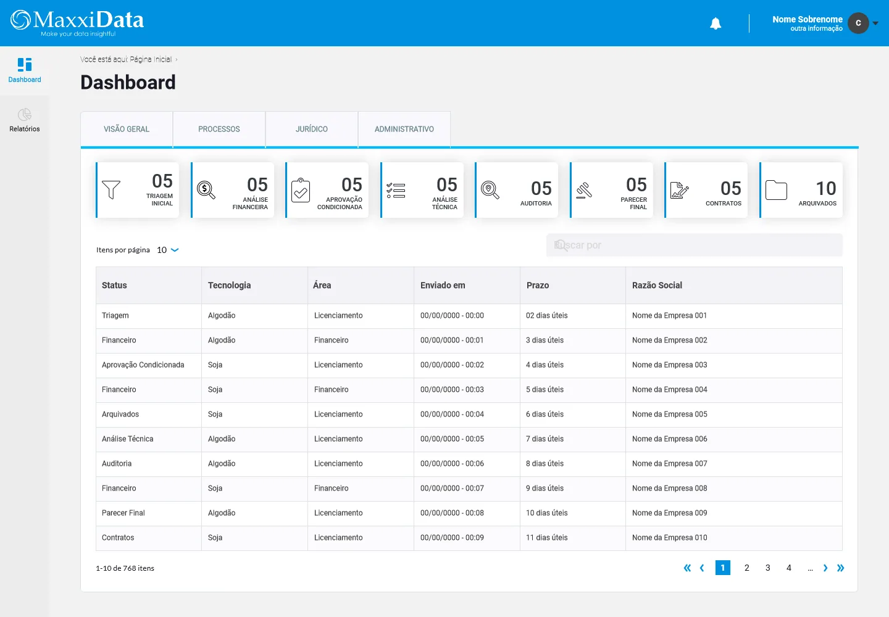
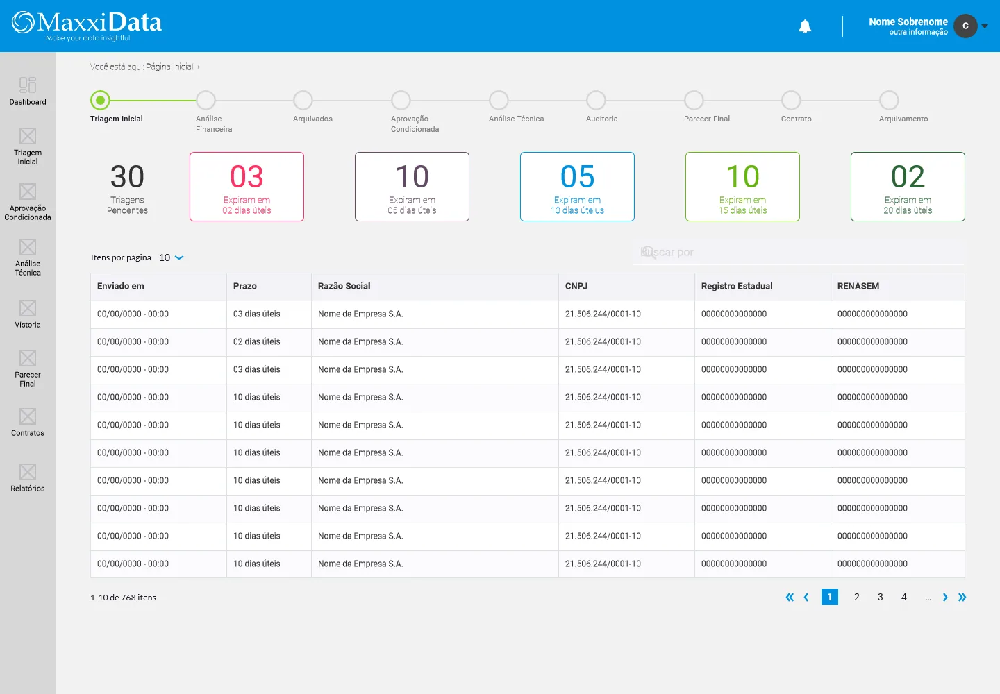
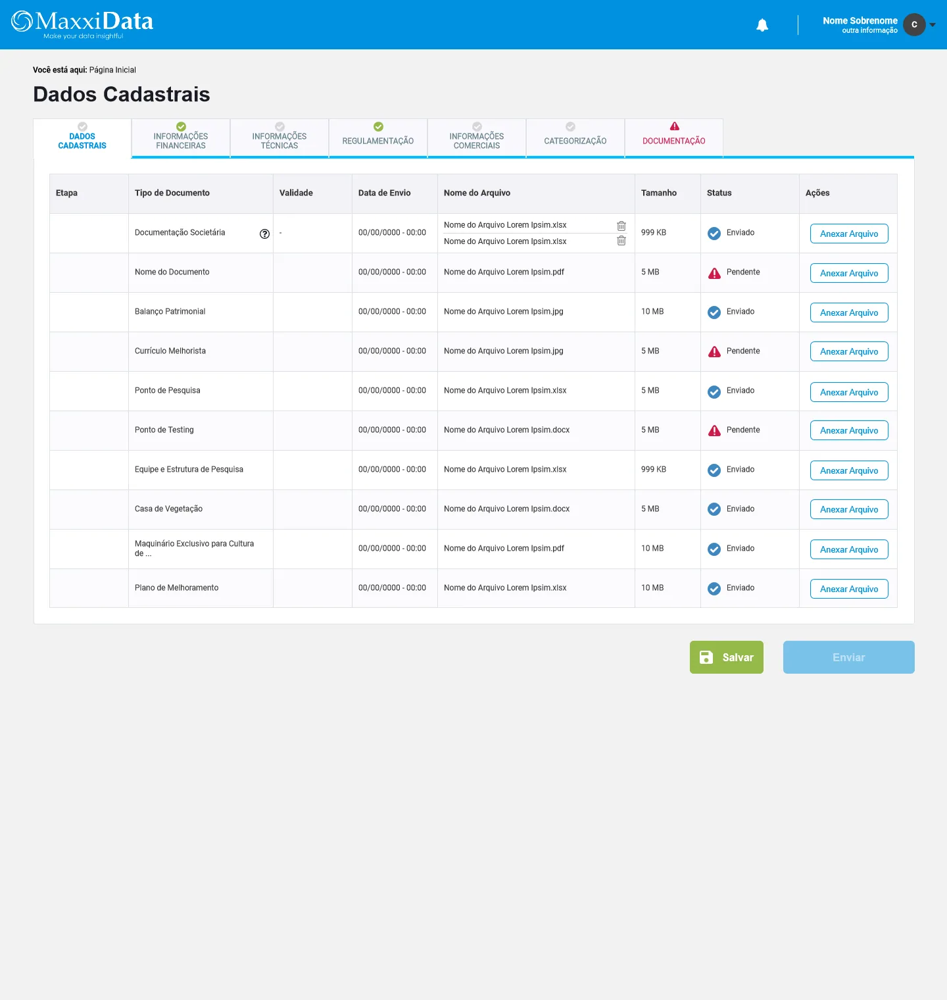
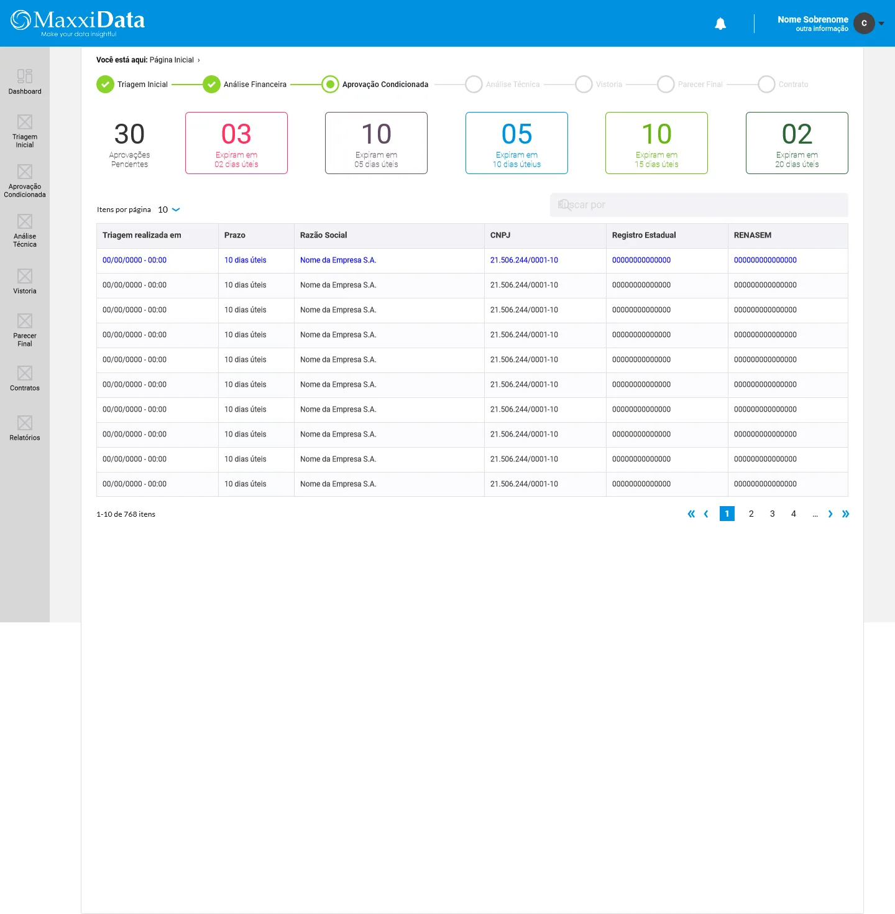
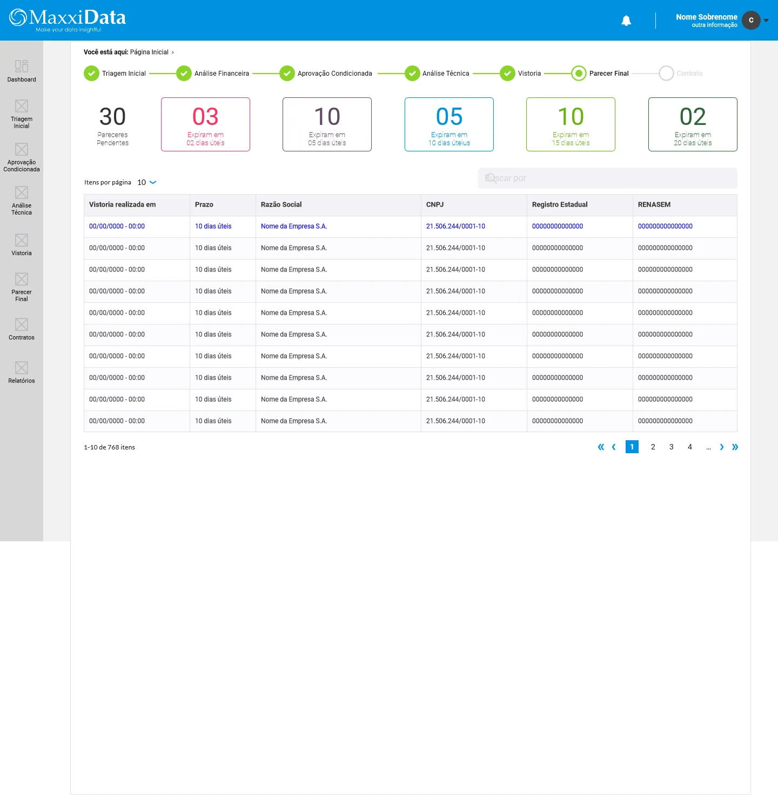
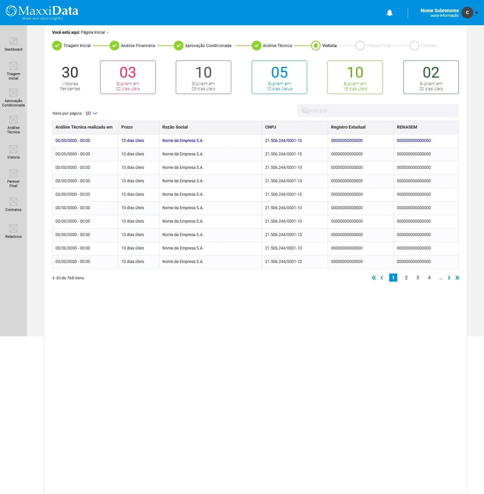

Modelo centrado na cultura
Organizar indicadores, pareceres e status por cultura agrícola.
Sistema territorial de inteligência agronômica para análise ambiental, validação técnica e suporte à decisão agrícola em ciclos de licenciamento.
Informações do Projeto
Projeto desenvolvido para organizar dados agrícolas, análise técnica e validação de tecnologias em um sistema interno.
Mais do que um projeto de interface, este trabalho envolveu compreender como a validação técnica agrícola funciona no dia a dia.
A plataforma organiza culturas, microrregiões, pareceres técnicos e evidências regulatórias em um fluxo único de validação.
O processo de validação agrícola envolve especialistas agronômicos, equipes comerciais, gestão técnica e áreas institucionais, cada uma com registros e critérios próprios.
Antes da plataforma, análises aconteciam de forma fragmentada: dados em sistemas distintos, comparações em planilhas e decisões em relatórios ou e-mails.
A decisão dependia de uma leitura comum entre áreas técnicas e institucionais.
Planilhas locais controlavam microrregiões. Relatórios técnicos em PDF consolidavam pareceres. E-mails registravam aprovações e pendências.
Nenhum desses registros compartilhava uma estrutura de dados comum, quebrando continuidade e dificultando rastreabilidade posterior.
A falta de estrutura comum tornava a decisão difícil de auditar.
O problema não era falta de dados — o time gerava dados de alta qualidade.
A dificuldade estava em cruzar safras anteriores, condições de microrregiões e exigências de propriedade intelectual.
A validação dependia de esforço manual recorrente, atrasando licenciamento e fragilizando justificativas posteriores.
Atuei na organização das visões de dados, estados e registros de parecer em torno da cultura agrícola como unidade central de análise.
Organizar indicadores, pareceres e status por cultura agrícola.
Conectar triagem, análise técnica, aprovação condicionada e parecer final.
Associar cada parecer ao conjunto de evidências usado na decisão.
Priorizar dados agronômicos, legais e comerciais em telas densas.
Desenhar telas de triagem, análise, formulário, parecer e auditoria.
Traduzir critérios técnicos para equipes heterogêneas.
Condições que limitaram a solução e orientaram as decisões de arquitetura.
A decisão estrutural foi organizar o sistema em torno da cultura agrícola. A partir dela, o usuário acessa microrregiões, tecnologias, pareceres, pendências e histórico.
Ciclo operacional estruturado:
A sequência estrutura leitura de processos, triagem, análise técnica, emissão de parecer e auditoria documental.

A tela inicial apresenta processos de validação por cultura, pendências regulatórias e urgência legal.

Triagem de tecnologia agrícola e análise detalhada de indicadores de safra e microrregiões.

Estrutura para inserir pareceres e checar pendências de patentes e restrições regulatórias.


Fluxo para decisões sob restrições técnicas e consolidação do parecer final.

Histórico de pareceres, status e justificativas para conformidade.
Consultas a órgãos de propriedade industrial e patentes governamentais permaneceram dependentes de portais públicos externos.
O sistema centralizou evidências técnicas, mas a assinatura legal do contrato ainda transitava por ecossistema corporativo externo.
A centralização dos dados agrícolas reduziu retrabalho de consolidação e estruturou um fluxo seguro para decisões críticas.
Fluxo rastreável para pareceres e decisões de validação.
Agronômico, comercial, CADE, gestão e fiscal conectados.
Da fase de requisitos à entrega de protótipos funcionais.
Base estruturada para reduzir consolidação manual.
Simplificar escondendo dados cruciais é erro quando se projeta para especialistas.
O papel do designer é criar legibilidade e estrutura, não remover a complexidade necessária.